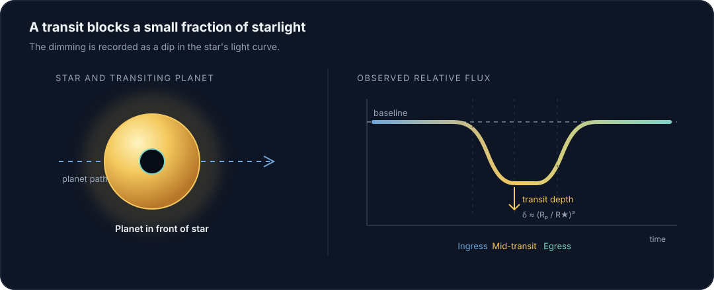
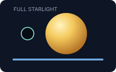
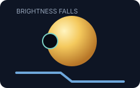
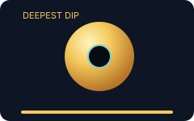
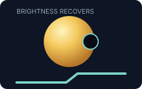

Explore stellar light curves and screen periodic transit signals for potential exoplanet candidates.
ExoDip combines Box Least Squares period search, astrophysical feature extraction, and an ensemble of machine-learning classifiers to evaluate raw stellar photometry.
ModelsXGBoost · RF · CNN · SVM
Transit SearchBLS 0.5 – 20 days
Features15 astrophysical metrics
Planetary system simulation — a transiting world around its host star
What Is ExoDip?
Photometric transit screening for candidate exoplanet signals
ExoDip processes raw stellar photometry to identify characteristic brightness dips caused by exoplanet transits — when a planet crosses in front of its host star along our line of sight. It is a screening engine, not a confirmation pipeline.
Why Transit Detection?
Most planets are found by watching stars, not planets
Direct imaging of exoplanets is rare. The transit method instead measures a star’s brightness over time. If a planet periodically blocks a fraction of that light, the resulting light curve encodes orbital period, transit depth, and duration.
Those signals are small — often well below 1% of the star’s flux — and sit on top of stellar variability, instrumental drift, and astrophysical false positives. That is the problem ExoDip is built to screen.
Typical Jupiter-size transit~1% dip
Typical Earth-size transit~0.01% dip
Search window0.5–20 day periods
Primary surveysKepler · TESS
How Transits Work
Why a planet creates a dip
When a planet passes between its host star and the observer, it blocks a small amount of starlight. That produces a characteristic decrease in observed brightness — the dip that gives ExoDip its name.


Baseline Flux
Constant stellar brightness before the event
→

Transit Ingress
Planet begins crossing the stellar disk; flux drops
→

Transit Mid-point
Deepest dip — depth ≈ (Rp/R★)²
→

Transit Egress
Planet exits; flux recovers to baseline
Detection Pipeline
How ExoDip works
Six automated stages from raw photometry to a calibrated candidate assessment. Technical detail lives in Documentation.
01
Light Curve Input
Upload time-series stellar flux from Kepler, TESS, or ground-based surveys in CSV, TXT, or NPY format.
02
Detrending
Filter instrumental drift, sensor artifacts, and stellar variability while preserving transit dip profiles.
03
BLS Period Search
Astropy Box Least Squares scans trial periods (0.5–20 days) to find recurring box-shaped flux dips.
04
Feature Extraction
Compute 15 astrophysical and statistical features: depth, duration, SNR, signal energy, spectral entropy, skewness.
05
ML Screening
Calibrated ensemble (XGBoost, Random Forest, CNN, SVM) evaluates the feature vector against transit-like profiles.
06
Candidate Assessment
Produce a candidate / non-candidate verdict, confidence score, diagnostic plots, and a downloadable JSON report.
Core Capabilities
What you can do with ExoDip
01
Transit Signal Detection
Identify periodic brightness dips in stellar light curves using Box Least Squares (BLS) periodogram analysis.
02
Ensemble Screening
Consensus across tuned XGBoost, Random Forest, CNN, and SVM classifiers to distinguish genuine signals from noise.
03
Light-Curve Analysis
Inspect brightness variations, transit depth, duration, and detected dip profiles with interactive diagnostic plots.
04
Candidate Insights
Review orbital period, BLS SNR, 15 astrophysical features, and export a JSON telemetry report for follow-up.
Workspace
Analyze a light curve
Upload stellar photometry and let ExoDip search for periodic transit-like signals. The full screening workspace — upload, preprocessing, BLS, features, and ML results — lives on a dedicated page.
Example of Analysis
What a screening result looks like
This is an illustrative example of typical outputs. It is not a live analysis from this session.
Example · Candidate
A periodic dip with sufficient BLS SNR and classifier agreement is labeled an exoplanet candidate — a recommendation for follow-up, not a confirmed planet.
Period
3.52 d
Transit Depth
1.20%
Duration
3.8 h
BLS SNR
14.8
Scientific Methodology
How the science is structured
Period search
Box Least Squares (Kovács et al. 2002) is the standard algorithm for detecting box-shaped transits in unevenly sampled photometry. ExoDip uses Astropy BLS over 0.5–20 day periods and 1–12 hour durations.
Feature vector
Fifteen morphological and statistical descriptors — including depth, duration, noise, skewness, kurtosis, signal energy, and spectral entropy — summarize the light curve for the classifiers.
Model evaluation
Ensemble models were trained and compared on Kepler photometry. XGBoost is the primary decision model based on held-out composite score (accuracy, precision–recall, and ROC-AUC).
Limitations
Screening is not confirmation
False positives: eclipsing binaries, grazing binaries, and blended background stars can mimic planetary transits.
Stellar activity: starspots, flares, and rotation can introduce spurious periodic dips.
Follow-up required: radial-velocity mass measurement and high-resolution imaging remain necessary for confirmation.
Documentation
Go deeper when you need the details
Screening Workspace
Analyze Light Curve
Upload photometry, run the detection pipeline, then inspect the light curve, BLS signal, features, and ML screening on the Results page.
1. Upload
2. Configure
3. Process
4. Analyze
5. Results
Drag and drop your light-curve file here CSV (flux column), Kepler 1-row CSV, whitespace TXT, or NPY arrays
Analyses stored in this browser. This list stays empty until you run a screening.
Total Analyses
0
Planet Candidates
0
Candidate Rate
0.0%
Active Decision Model: XGBoost
Source
Verdict
Confidence
Decision Model
Date
Action
No analyses yet
Submit a light curve in the Analyze tab to populate this session history.
Scientific Context
About ExoDip
ExoDip is a candidate screening tool designed to help researchers, students, and astronomy enthusiasts analyze stellar light curves for signatures of transiting exoplanets. Using a combination of Box Least Squares (BLS) period searching, astrophysical feature extraction, and an ensemble of machine learning classifiers, ExoDip evaluates raw photometry to identify candidate transit events.
Scientific Notice:
ExoDip is a candidate screening tool, not a confirmation pipeline. Exoplanet confirmation requires extensive follow-up observations, including high-resolution imaging, radial velocity spectroscopy, and statistical validation against astrophysical false positives (such as eclipsing binaries and background blended stars).
Core Technologies
Python 3
Modern scientific runtime and high-performance computing environment.
Lightkurve & Astropy
Photometric transit modeling, BLS search, and astronomical time-series tools.
NumPy & Pandas
Array processing, mathematical transformations, and tabular metadata management.
Scikit-learn & XGBoost
Supervised gradient boosting, random forests, and calibrated decision boundaries.
Scientific Architecture
Detection & Screening Pipeline
01
Photometric Ingestion
High-precision stellar flux measurements from space-borne (Kepler, TESS) or ground observatories.
02
Detrending & Calibration
Systematic noise mitigation, baseline normalization, and removal of instrumental artifacts and stellar flares.
03
BLS Periodic Dip Search
Astropy BLS periodogram scans trial orbital periods (0.5–20 days) to detect periodic box-shaped dips.
04
Morphological Profiling
Calculation of 15 key astrophysical features: transit depth, duration, SNR, signal energy, Shannon entropy, and skewness.
05
Machine Learning Ensemble
Supervised consensus combining tuned XGBoost, Random Forest, Support Vector Machines, and Deep Convolutional Networks.
Photometric Normalization: Flux values are detrended and smoothed using a uniform box filter to isolate local fluctuations while preserving transit dip profiles.
Box Least Squares (BLS): An Astropy BLS periodogram scans trial periods from 0.5 to 20 days with trial transit durations from 1 to 12 hours to search for periodic box-shaped occultations.
Feature Extraction: 15 distinct morphological and statistical features are computed, including transit depth, duration, noise standard deviation, skewness, kurtosis, signal energy, and spectral entropy.
Ensemble Decision Logic: Calibrated XGBoost and Random Forest models evaluate the feature vector alongside BLS transit significance to assign the final candidate classification.
Understanding Results
Period (Days): The best-fit orbital period detected by the Box Least Squares periodogram.
Transit Depth (%): The fraction of stellar flux blocked during transit mid-point: δ = ΔF / F ≈ (R_p / R_*)^2
BLS SNR: The signal-to-noise ratio of the transit dip relative to residual stellar noise. High SNR values (> 5.0) indicate statistically significant transit shapes.
Screening Confidence: The model's calibrated probabilistic assessment that the signal matches bona fide planetary transit profiles rather than stellar variability or noise.
Important Limitations & Astrophysical Caveats
False Positives: Eclipsing binary stars (EB), grazing binaries, and background blended stars can mimic planetary transits.
Stellar Activity: Starspots, stellar flares, and rotation can introduce spurious periodic dips.
Confirmation Required: Candidate status is an initial screening recommendation. Confirmation requires high-precision radial velocity spectroscopy (to measure planetary mass) and high-resolution imaging (to rule out background companions).
Frequently Asked Questions
Q: What is the difference between an exoplanet candidate and a confirmed exoplanet? A: A candidate exhibits transit-like signals in photometric data that have not yet undergone independent observational confirmation (such as spectroscopic mass determination).
Q: Why is XGBoost used as the primary decision model? A: On our held-out benchmark evaluation, tuned XGBoost achieved the highest composite score (balanced accuracy, precision-recall, and ROC-AUC) among the ensemble classifiers tested on the Kepler dataset.
Q: What photometric precision is required? A: ExoDip can detect transit depths as low as ~0.1% (1000 ppm) in clean photometry. Space-based observations (Kepler, TESS) generally meet this requirement; ground-based data may require additional preprocessing to achieve comparable sensitivity.